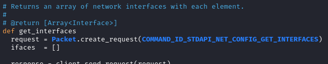
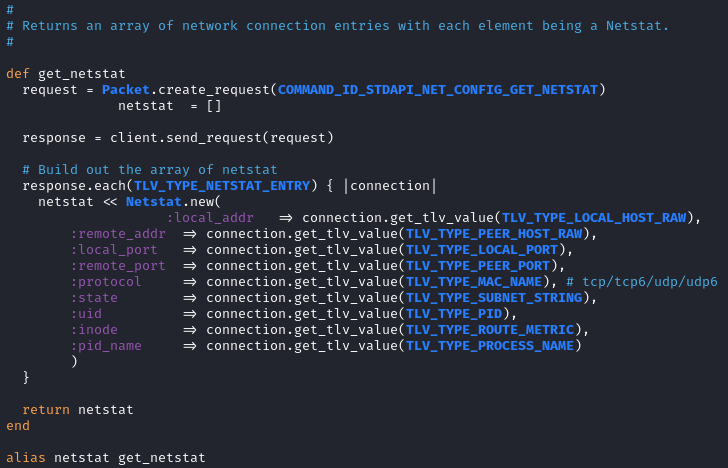

net
/usr/share/metasploit-framework/lib/rex/post/meterpreter/extensions/stdapi/net
Formatting on the meterpreter console:
/usr/share/metasploit-framework/lib/rex/post/meterpreter/ui/console/command_dispatcher/stdapi/net.rb
◇ get_interfaces
 net.config.get_interfaces
each interface returned is an instance of the Interface class (/usr/share/metasploit-framework/lib/rex/post/meterpreter/extensions/stdapi/net/interface.rb)
◇ get_netstat
 net.config.get_netstat
net.config.netstat #alias
each element returned is an instance of the Netstat class (/usr/share/metasploit-framework/lib/rex/post/meterpreter/extensions/stdapi/net/netstat.rb)